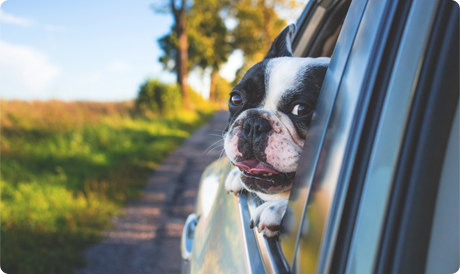
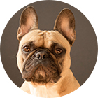
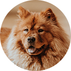
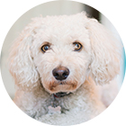
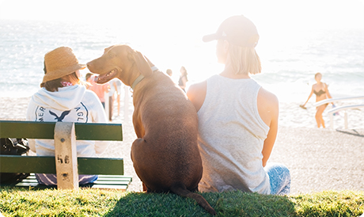
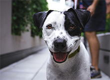
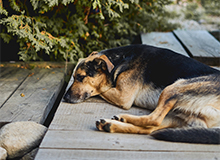

Питомник породистых животных рядом с вашим домом
животные как дети - им нужны мы.
О питомнике
Наш питомник - не просто дом для животных, а семья из разных пород собак и кошек.

- Лучшие представители своей породы
- Сбалансированный рацион питания питомца
- Ежедневный уход и тренировки
- Веселье,свежий воздух и отличная компания
Наши породы
французский бульдог

Идеальный вариант городской собаки -они входят в тройку самых популярных собак на планете.Любят короткие прогулки и хорошо поспать.
ПОСМОТРЕТЬ ЩЕНКОВЗолотистый ретвивер
Добродушные,ориентированные на людей собаки.Они отлично ведут себя с детьми и больными.Могут быть поводырями.
посмотреть щенковЧау-чау

Эти собаки с хорактером,они всегда серьезны,но временами прояв характер.
ПОСМОТРЕТЬ ЩЕНКОВПудель

Активные и компанейские собаки. Любят много гулять.Обладают отличным чувством юмора.
ПОСМОТРЕТЬ ЩЕНКОВОтзывы хозяев
Татьяна Зверева
27.02.2018Хочу выразить вам большую благодарность Вам за это чудо -малыша,который появился у нас в семье. Деликатный, милый, ласковый и нежный белоснежный Уник,в которого я влюбилась с первого взгляда,увидев его фотографию на сайте вашего питомника.Очень умный малышь!

Больше отзывов можно найти у нас в группе ВК
Все о животных
Мы ведем активный блог про наших животныхв социальных сетях-присоединяйтесь к нам.Полезные материалы про обучение,дрессировку,питание.
{kind=link}

Правильный рацион для взрослого пса
Читать статью

Бывает ли собачья депрессия?
Читать статью